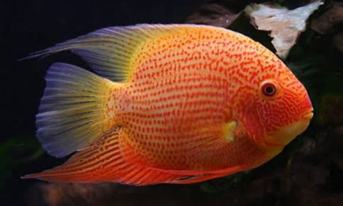
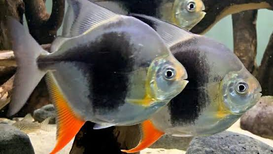
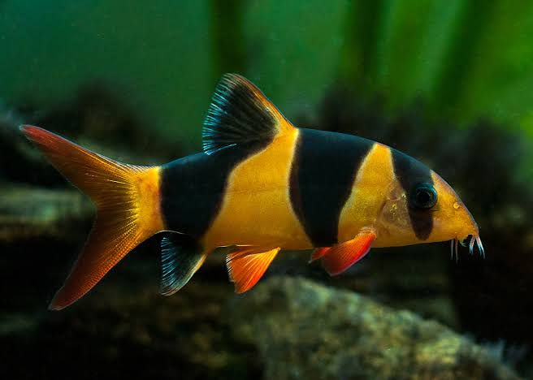
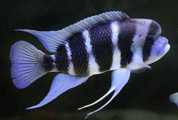

African Cichlids are colorful, territorial fish native to African lakes like Lake Malawi. They thrive in stable, well-maintained tanks with slightly alkaline, hard water. Lifespan: 8 to 15 years.

Redspotted Severum 7
Price: Rs. 1200 each
The Redspotted Severum is a vibrant freshwater cichlid known for its bright green body and distinct red spots. Lifespan: 10 to 15 years. Ideal pH: 6.5 to 7.5.

Black Berry Dollar 3-4
Price: Rs. 850 each
A striking freshwater fish with deep black body and metallic, iridescent spots. Lifespan: 5 to 7 years. Ideal pH: 6.5 to 7.5.

Clown Loaches 4
Price: Rs. 600 each
Known for their orange and black stripes, Clown Loaches are lively and social. Lifespan: Up to 12 years. Ideal pH: 6.0 to 7.5.

Frontosa Burundi 2-3
Price: Rs. 1500 each
Known for its unique hump and striking appearance, the Frontosa Burundi thrives in large tanks. Lifespan: Up to 20 years. Ideal pH: 7.5 to 9.0.